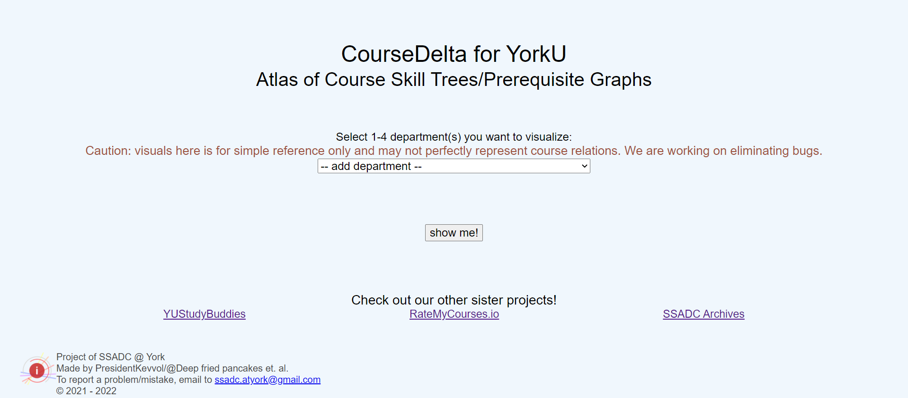
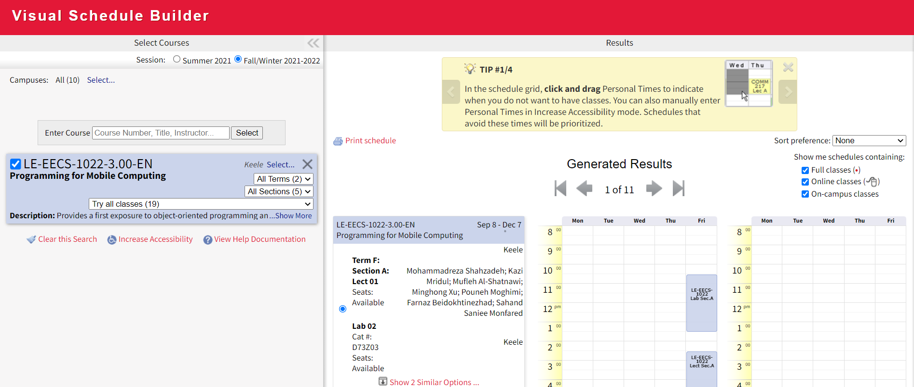
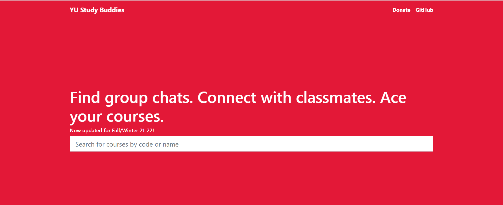
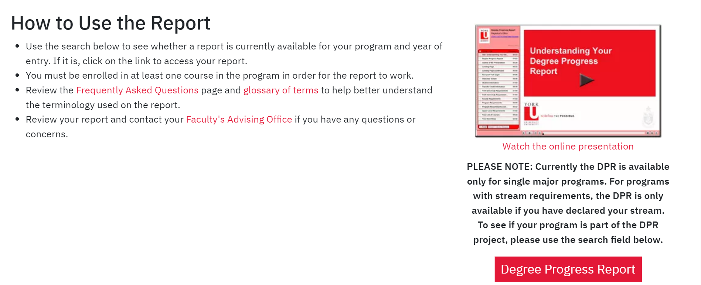
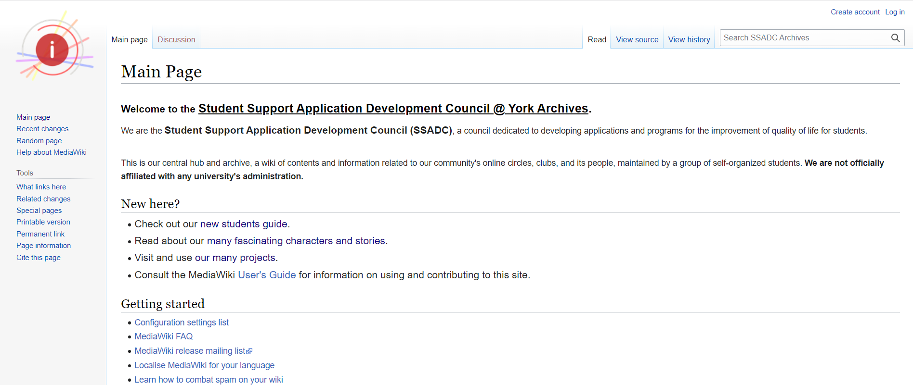

Resources
The Lassonde Computer Science Unofficial Guide
This is a comprehensive guide to survive Lassonde's Computer Science.

Okay, great! I have the guide, but how do I know which courses to take each semester? Don't worry, you have CourseDelta for YorkU. You will find details of courses along with their prerequisites. Believe me this is one of the most handy tool you will ever find.
I have listed the courses that I would be taking, but how do I make my schedule? Use Visual Schedule Builder.
I have the option to choose between professors, so which professor should I choose? Use Rate my professor.
I took the courses, but I want to meet others from the same class, how can I do that? YU Study Buddies exists to help you.
Boost academic performance
I am all set, but now I am struggling with course content and time management, what can I do?
You can use w3schools to learn programming languages.
You can use CodingBat to practice programming.
You can use Speechify to save time by reading smarter, not harder.
Oh! finally semester is over, but where can I find my course grades or my degree progress report?
Right here : Degree Progress Report.
Student Support Application Development Council
Another comprehensive guide to help you succeed.
